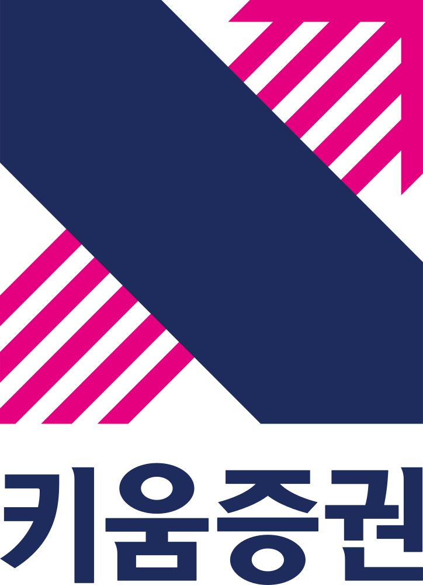
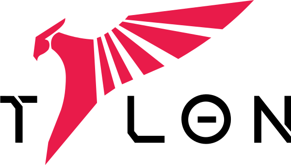
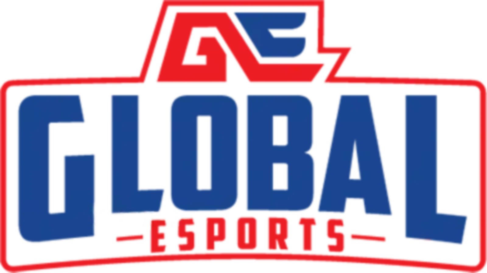
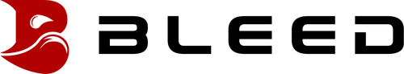
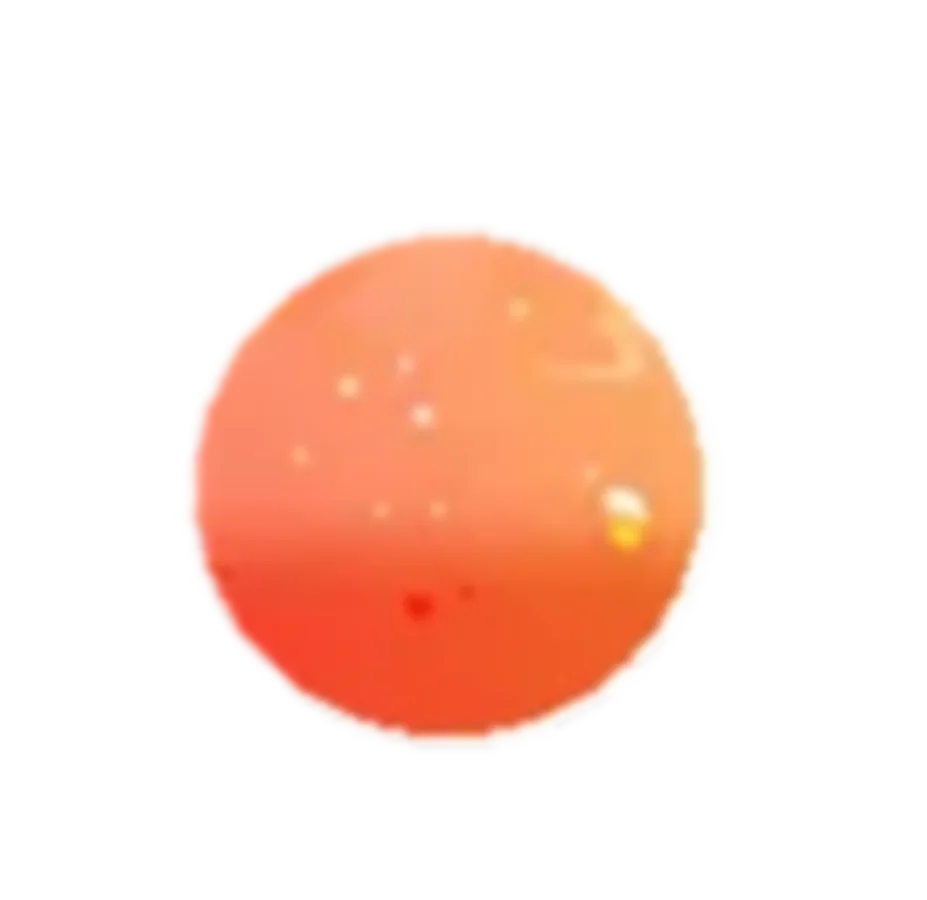

VVCT PACIFIC
발로란트 챔피언스 투어
퍼시픽 리그 참가 구단
[ 펼치기 · 접기 ]







1. 개요
대한민국의 e스포츠 프로게임단. 효빈광역시를 연고지로 하고 있으며, 덕빈권 최대의 금융기관인 효빈은행이 모기업이다.
팀명인 BRESPA는 'Bridge(다리/금융의 연결)'와 'Spark(열정/불꽃)'의 합성어로, 고객의 자산을 연결하고 게이머들의 열정을 깨운다는 의미를 담고 있다. 타 게임단들이 리그 오브 레전드(LoL)에 목을 맬 때, 과감하게 LoL 구단 창단을 포기하고 발로란트(VCT Pacific)와 FC 온라인을 주력 종목으로 선택하는 틈새시장 공략(?)을 보여주었다.
라이벌 구단인 Hyobin AQUORS가 시 차원의 전폭적인 '덕질'을 지향한다면, 이쪽은 은행 특유의 세련되고 전문적인 '금융 인프라와 첨단 기술의 결합'을 강조하는 스마트한 이미지를 추구한다.
2. 지배 구조 및 경영: 은행권의 막강한 자본력
구단주인 효빈은행은 덕남은행을 집어삼킨 저력 있는 금융기관답게, 구단 운영비에 있어서는 리그 내에서도 손꼽히는 큰손이다.
특히 계열사와 연계한 '게이머 특화 금융 상품' 및 '하이엔드 장비 리스 서비스'로 수익 모델을 다각화하고 있다. 발로란트 선수단 숙소는 전국 지방은행 중 유일하게 시청 앞 고송신도시 최고층 펜트하우스를 통째로 빌려 사용 중이며, 식단은 효빈은행 본점 VIP 식당 조리사들이 직접 관리하는 등 복지가 매우 호화롭다. 금융권의 돈 냄새가 e스포츠 판을 덮고 있다.
3. 공식 앰버서더: '겜순이 3대장' (L-Project 협력)
HNB BRESPA가 창단과 동시에 엄청난 팬덤을 확보한 비결은 바로 효빈교통공사와의 파격적인 캐릭터 라이선스 계약이다. 평소 보수적인 은행 이미지를 탈피하고자 했던 효빈은행은, 교통공사 소속 마스코트 그룹인 레일루미네 중 가장 게임에 진심인 3인방을 전면에 내세웠다.
교통공사 측도 "우리 애들 게임 실력을 썩히기 아깝다"며 흔쾌히 허락해 주었다는 후문.
- 7호선 임세하 (INTP): 팀의 전략 분석 및 전술 자문 담당. 발로란트 요원 픽률과 맵별 교전 데이터를 다중회귀분석 수치로 까내리는(?) AI급 분석력을 보여줘 감코진을 당황케 한다. 구단 홍보 영상에서 FC 온라인 선수들의 패스 미스 확률을 소수점 둘째 자리까지 계산하며 팩트 폭력을 날리는, 사실상 구단의 브레인 담당.
- 2호선 하루빈 (ESFP): 커뮤니티 및 스트리밍 총괄. '자본주의 미소'를 활용한 소통의 달인. 역무원 시절 쌓은 진상 방어 스킬로 구단 공식 SNS의 악플을 능글맞게 대처하며, 선수들의 발로란트 개인 방송에 듀오로 난입해 오더를 내리기도 한다. 가끔 "병가 내고 VCT 직관 가는 법" 같은 위험한 릴스를 찍어 은행장님을 뒷목 잡게 만든다.
- 8호선 유리아 (ISTP): 하드웨어 및 장비 관리. "에? 대박! 이 래피드 트리거 스위치 뜯어봐도 돼요?"가 입버릇. 선수들의 커스텀 키보드와 FPS 전용 마우스를 직접 분해/청소/개조해주며, 발로란트 대회 중 장비 오작동으로 퍼즈(Pause)가 걸리면 몽키스패너를 들고 무대 위로 난입하려다 제지당하는 기믹이 있다.
이 세 명이 구단 굿즈샵에 등신대로 세워져 있는 날엔 효빈은행 본점 앞이 성지순례객들로 마비되는 진풍경이 벌어진다.
4. 라이벌리: 효빈 더비 (Hyobin Derby)
가장 큰 라이벌은 같은 시를 연고로 하는 효빈도시공사 운영의 Hyobin AQUORS다.
- 발로란트 멸망전: AQUORS 역시 발로란트 팀을 운영하고 있어 두 팀이 맞붙는 날은 그야말로 피 터지는 멸망전이 벌어진다. AQUORS가 애니메이션 아쿠아(Aqours)의 낭만과 기세로 돌격한다면, BRESPA는 임세하의 데이터 분석이 들어간 끈적한 세팅과 실리적인 전술로 상대의 멘탈을 갉아먹는다.
- 장외 전쟁: 시청 앞 전광판에는 박효빈 시장의 승리 기원 영상이 올라오고, 경기장 주변은 교통공사 전철 캐릭터(BRESPA)와 도시공사의 아쿠아 캐릭터(AQUORS) 굿즈가 뒤섞여 흡사 대형 서브컬처 축제 현장을 방불케 한다. 서로 "수수료 장사나 하는 은행 놈들!" vs "아파트 팔아먹는 투기꾼들!" 이라며 훈훈한(?) 디스전이 오간다.
5. 여담
- 통장 계좌 혜택: BRESPA 팬들은 효빈은행에서 '브레스파 VCT 승리 적금'을 들 수 있는데, 팀이 마스터스나 챔피언스에 진출할 때마다 우대 금리가 폭발적으로 올라간다. 팀이 부진하면 은행 창구 직원들이 같이 오열하며(?) 고객을 달래준다는 소문이 있다.
- 임세하의 커스텀 PC: 구단 클럽하우스의 서버와 선수용 PC는 모두 세하가 직접 오버클럭 세팅을 마쳤다. 덕분에 발로란트 핑(Ping)이 0.1ms도 튀지 않는 우주 방어급 네트워크를 자랑한다.
- 하루빈의 농땡이: 빈효선 환승역 역무실에서 몰래 FC 온라인 챔피언십 경기를 중계하다가 선배 고나미에게 걸려 "근무 중 딴짓 금지입니다!"라는 사자후와 함께 방송이 강제 종료되는 영상이 구단 유튜브 최고 조회수를 찍었다.
- 유리아의 몽키스패너 테러 미수: VCT 퍼시픽 결승전 도중 마우스가 버벅이자, 유리아가 진짜 스패너를 들고 경기석으로 난입하려다 심판에게 퇴장당할 뻔한 사건은 글로벌 FPS 팬들 사이에서 전설적인 밈(Meme)으로 남아 있다.
- 협의의 기술: 효빈교통공사가 앰버서더 모델 사용을 흔쾌히 허락한 진짜 이유는, 효빈은행이 공사의 신형 전동차 도입 자금을 무이자나 다름없는 파격적인 금리로 대출해 주었기 때문이라는 '자본주의적 훈훈함'이 깔려 있다(...).